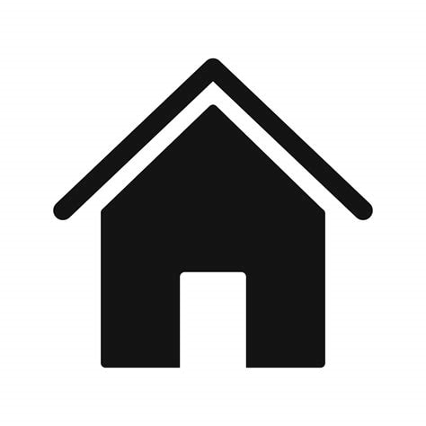

<div [ngClass]="'bodyWrapper'" id = "bodyWrapper">
<header>
  <div  id = "home-media">
    <div style="margin-top:10px;margin-left:10px;" >
      <a  href="/" target="_blank">
        
    </a>
    </div>
    <div style="margin-top: 10px;" id = "social-media">
      <a href="//linkedin.com/in/sama-heshmatzadeh/" target="_blank">
          
      </a>

      <a href="//github.com/samanehesh/" target="_blank">
          
      </a>
      <!-- <a href="//facebook.com" target="_blank">
        
      </a> -->
    </div>
    <!-- <github-user-repos initial-username="samanehesh"></github-user-repos> -->

  </div>
  <button style="margin:10px;" (click)="toggleMenu()" class="btn-menu" id="btn-menu" aria-label="Toggle Menu">
    <span class="button-content">
      <span class="text">Menu</span>
      <span class="bar" id="bar"></span> 
    </span>
  </button>
  <nav id="main-navigation">
      <ul>
        <li>
          <a
          (click)="toggleNav()"
            routerLink="/"
            routerLinkActive="active"
            [routerLinkActiveOptions]="{ exact: true }"
            ariaCurrentWhenActive="page"
            >Home</a
          >
        </li>
        <li>
          <a
          (click)="toggleNav()"

            routerLink="/about"
            routerLinkActive="active"
            [routerLinkActiveOptions]="{ exact: true }"
            ariaCurrentWhenActive="page"
            >About</a
          >
        </li>
        <li>
          <a
          (click)="toggleNav()"

            routerLink="/projects"
            routerLinkActive="active"
            [routerLinkActiveOptions]="{ exact: true }"
            ariaCurrentWhenActive="page"
            >Projects</a
          >
        </li>
        <li>
          <a
          (click)="toggleNav()"

            routerLink="/resume"
            routerLinkActive="active"
            [routerLinkActiveOptions]="{ exact: true }"
            ariaCurrentWhenActive="page"
            >Resume</a
          >
        </li>
        <li>
          <a
          (click)="toggleNav()"

            routerLink="/contact"
            routerLinkActive="active"
            [routerLinkActiveOptions]="{ exact: true }"
            ariaCurrentWhenActive="page"
            >Contact</a
          >
        </li>
        <!-- <li>
          <a
            routerLink="/github"
            routerLinkActive="active"
            [routerLinkActiveOptions]="{ exact: true }"
            ariaCurrentWhenActive="page"
            >Git</a
          >
        </li> -->
      </ul>
    </nav>

  </header>

  <main [ngClass]="'mainWrapper'">

    <router-outlet></router-outlet>
  </main>

  <footer >
    &copy; {{name}} - {{year}}
  </footer>
</div>
<!-- <script>
const body = document.body;
const btnMenu = document.getElementById('btn-menu');
const nav = document.getElementById('main-navigation');

btnMenu.addEventListener('click', toggleMenu);

function toggleMenu() {
  body.classList.toggle('show');
  nav.classList.toggle('activated');
  console.log()
}

const mql = window.matchMedia('(min-width: 760px)');
mql.addListener(removeTransition);

function removeTransition(e) {
  if (e.matches) {
    body.classList.remove('show');
    nav.classList.remove('activated');
  }
}

</script> -->


